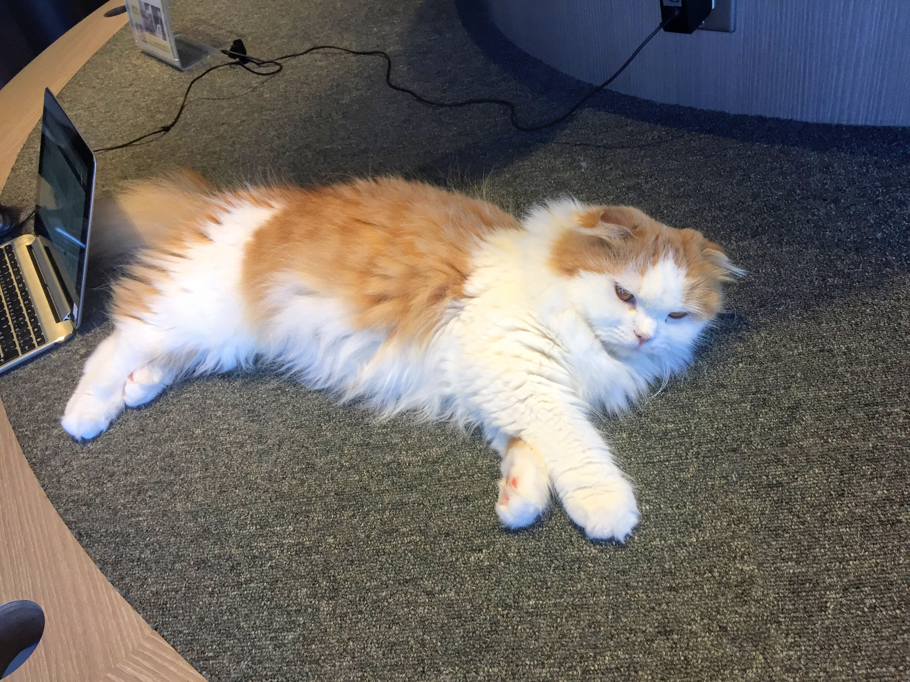

Of all the places in the world which I wished to travel to, Japan is one which has always been on the top of my to-go-places. From the culture to the food, there's so many unique quirks about the country which hasn't been fully explored or discovered by western culture. With it being one of my top places to travel,  it was the first country I traveled to when I decided to become a full-time traveler.
it was the first country I traveled to when I decided to become a full-time traveler.
One of the places I visited in my adventures was famous Mount Fuji. Though it was a bit cloudy that day, from across the green tea leaf bushes, I could see the summit of the mountain, peaking out behind the fluffy clouds. My favorite part about the Mount Fuji trip, was being able to sit at the tea farms and view the mountain in all its glory.
While in Tokyo, I also had a chance to visit one of Japan's Cat Cafes. Though I have been to a Cat Cafe in the United States, I wanted to see what Japan's cafes had to offer (I also wanted an excuse to play with cats, but that's beyond the point haha)! The cafe's address was in Shibuya and after the treck from Japan's metro system, I found myself at a business complex, somewhere which I never would have expected to find a cafe, and one with cats as well. After checking in, I found myself surrounded by cats relaxing, sleeping, looking for attention, or just hanging out with the other inhabitants. I stayed there for only a short hour, but I definitely would want to return and visit again.